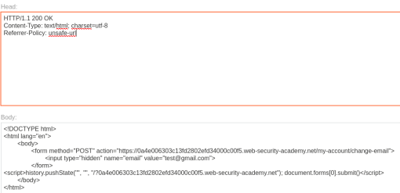

CSRF with broken Referer validation
- Provided with blog website, credentials “wiener:peter”, told to change the viewer's email.
- Logged in with provided credentials
- Intercepted request to update email
- Pasted request into csrfshark.github.io/app
- Modified request to function and pasted into body section of provided exploit server
- Added header “Referrer-Policy: unsafe-url” to Head section on provided exploit server:

- Delivered to victim and completed lab successfully: